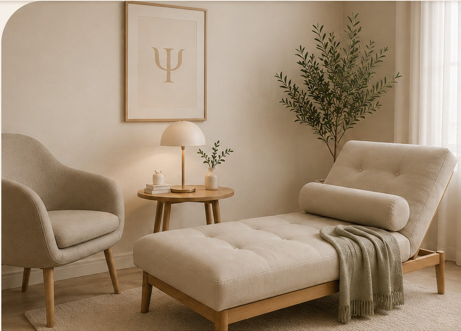

♧
Atendimento Individual
Escuta singular e cuidadosa, respeitando o tempo e a história de cada pessoa.
Atendimento psicológico online individualizado, com psicoterapia e psicanálise, para falar, escutar e elaborar, respeitando a singularidade de cada processo.
Sessões de 50 minutos • Atendimento online • Google Meet
CONHECER O ATENDIMENTOEscuta singular e cuidadosa, respeitando o tempo e a história de cada pessoa.
Sessões por videochamada, com privacidade e praticidade, realizadas pela plataforma Google Meet.
Um espaço para compreender conflitos, angústias, relações e repetições.
Meu trabalho clínico parte da escuta singular de cada pessoa.
Não se trata de oferecer respostas prontas, mas de construir, junto com você, um espaço onde sua fala possa encontrar lugar.
A partir da psicologia e da psicanálise, o processo terapêutico possibilita olhar para conflitos, angústias, relações e repetições que atravessam a vida, buscando novos sentidos.

Um espaço para você. A psicoterapia online é individual, acolhedora e cuidadosa, respeitando o tempo e a singularidade de cada processo.
A fala pode revelar novos sentidos. O trabalho analítico considera a singularidade de cada sujeito e aquilo que emerge no processo.
Atendimento psicológico online individualizado, com condições de atendimento definidas de acordo com cada demanda.
O atendimento psicológico online oferece um espaço reservado de escuta e elaboração, realizado por videochamada pelo Google Meet.
Vanessa Luz realiza psicoterapia e psicanálise online, com sessões individuais de 50 minutos e condições de atendimento definidas de acordo com cada demanda.
Se você procura uma psicóloga online para iniciar ou conhecer um processo de psicoterapia, entre em contato para saber como funciona o atendimento.
O atendimento é realizado online, por meio da plataforma Google Meet, em um ambiente reservado e com privacidade.
As sessões têm duração de 50 minutos.
O atendimento psicológico é individualizado, com condições de atendimento definidas de acordo com cada demanda.
Não atendemos convênios.
Entre em contato para conhecer o atendimento psicológico online, tirar dúvidas e verificar as condições e horários disponíveis.
FALAR PELO WHATSAPPAtendimento psicológico online, com sessões de 50 minutos pela plataforma Google Meet.